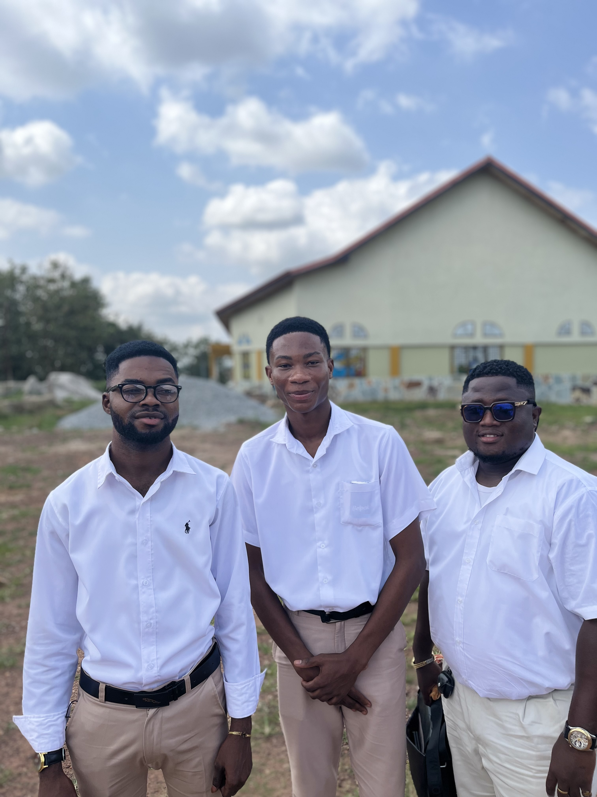

This portfolio presents my field observation experience as part of the Supporting Teachers in School (STS) program. As a Level 100 student teacher, I was assigned to Akrokerri D/A JHS, where I observed classroom routines, teaching methods, and learner interactions. The videos and images displayed here provide a visual record of my learning journey, highlighting the skills, insights, and professional exposure gained during this foundational phase of my teacher education.
This photo, taken on 9th December during my STS observation, shows me assisting a learner with her classwork. The moment reflects focused engagement, individual support, and positive teacher–learner interaction. It highlights my developing role as a student teacher and the value of guiding learners to enhance understanding.
